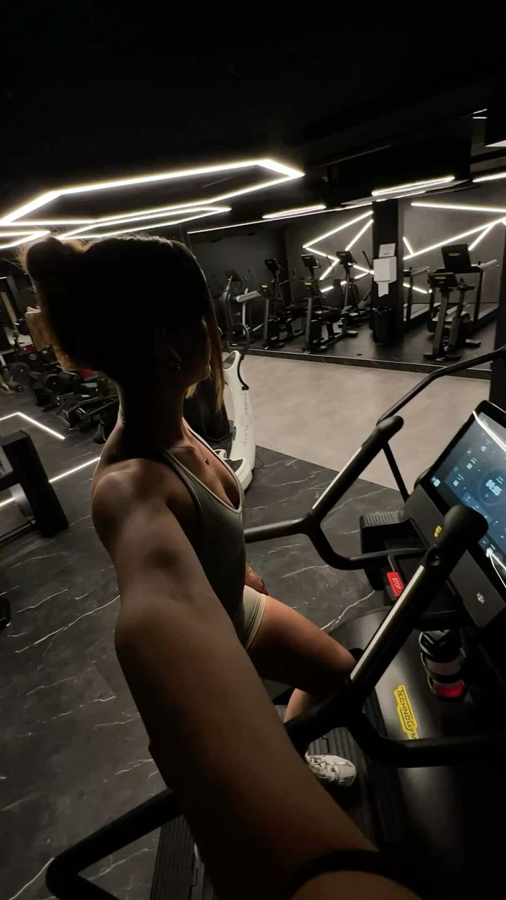
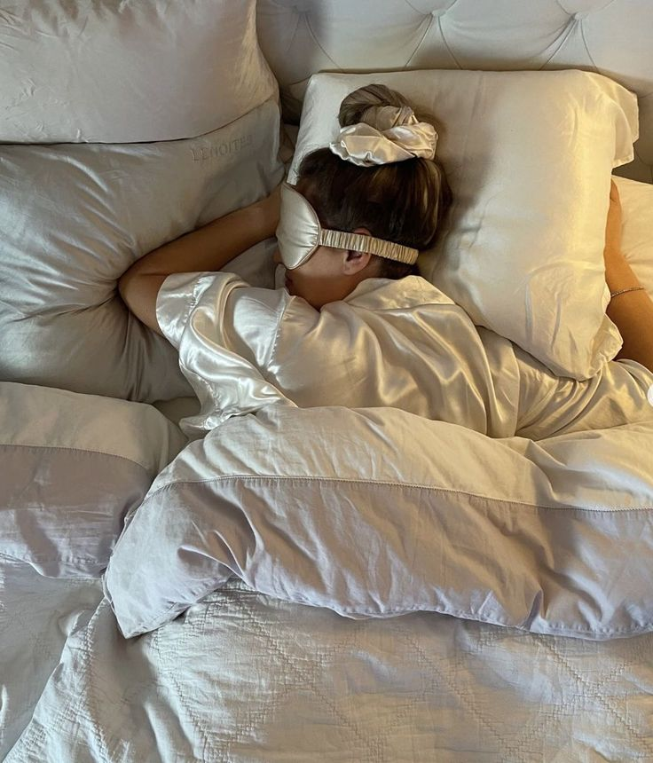
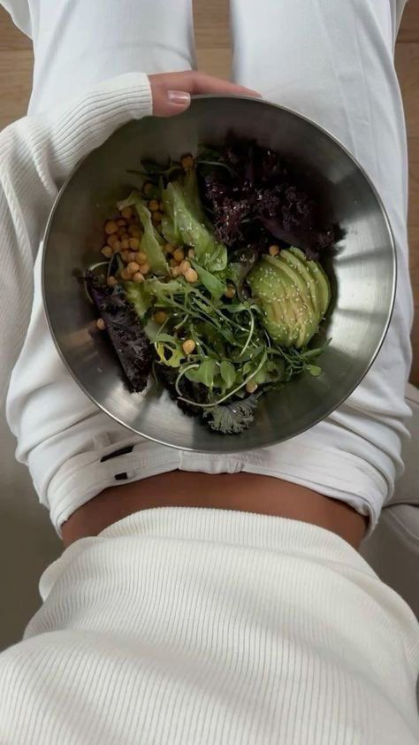
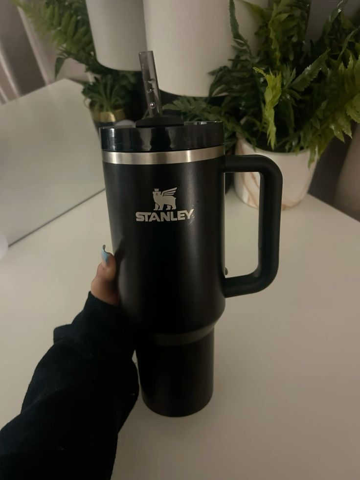
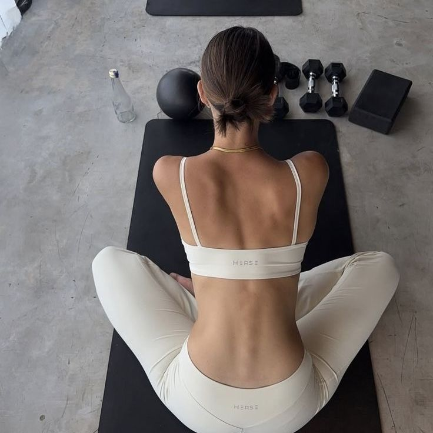
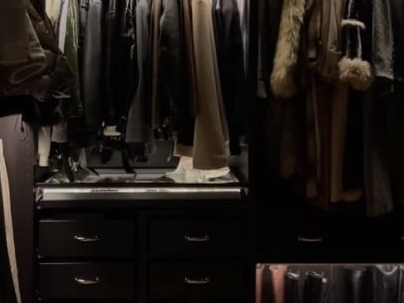
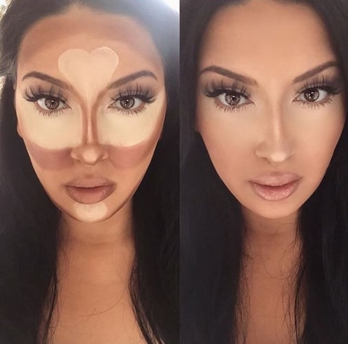

Фитнес и спорт
Твоята фитнес рутина те кара да изглеждаш по-стара

Баланс и здраве
Луксозната спа измама: 5 процедури, които си струват парите, и 3, които са чист маркетинг

Баланс и здраве
Сънят е новият символ на статус

Здравословно хранене
Тихата диета на свръхбогатите

Баланс и здраве
Твоята бутилка за вода съсипва кожата ти

Фитнес и спорт
5-минутната сутрешна рутина, която заменя 60-минутна тренировка

Здравословно хранене
Как да изглеждаш сякаш имаш гардероб за 10 000 евро, когато нямаш пари

Здравословно хранене
Как да използваш контуриране, за да промениш формата на лицето си (като знаменитост)
Здравословно хранене